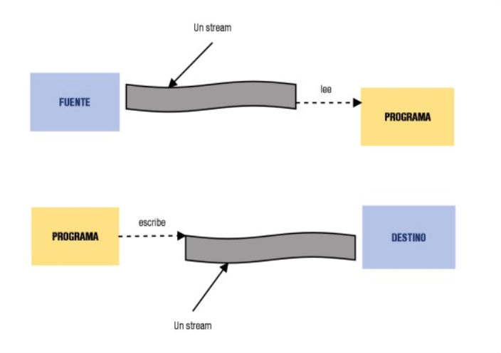
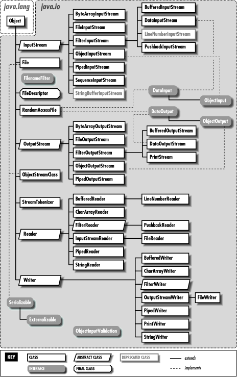
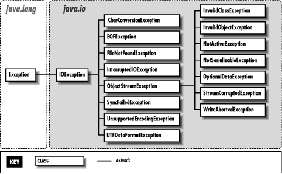
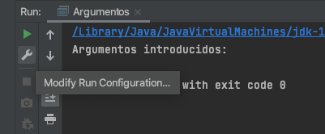
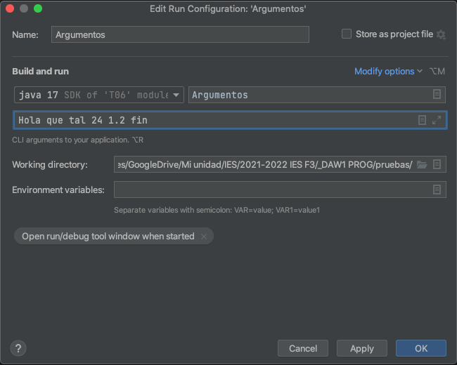
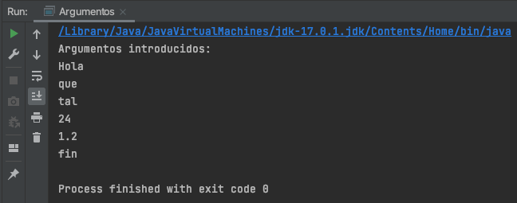
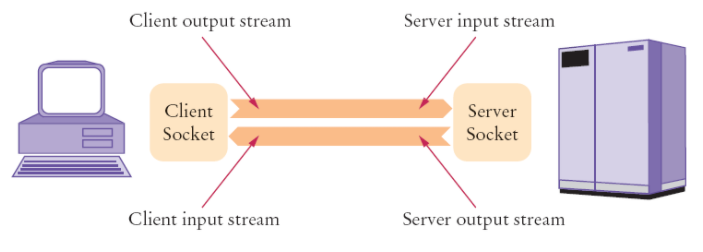
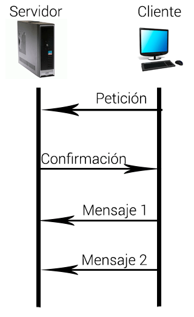

Tema 8: Flujos (Entrada/Salida, ficheros y redes)¶
Duración y criterios de evaluación
Duración estimada: 12 sesiones
Resultados de aprendizaje
- Conocer la necesidad de la persistencia: los datos viven más allá de la ejecución del programa.
- Comprender el concepto de flujo de datos y los dos grandes tipos (caracteres y bytes).
- Leer y escribir ficheros de texto con el paquete
java.io. - Serializar objetos para almacenarlos en disco.
- Guardar preferencias con el archivo
Properties. - Pasar argumentos por línea de comandos a los programas.
- Establecer comunicación entre programas mediante sockets.
Criterios de evaluación
- Se elige el flujo de datos adecuado (caracteres vs. bytes) para cada necesidad.
- Se realizan lecturas y escrituras de ficheros capturando
FileNotFoundExceptioneIOException. - Se gestionan correctamente los recursos con
try-with-resources. - Se serializan y recuperan objetos propios con
ObjectOutputStream/ObjectInputStream. - Se guardan y leen preferencias con
java.util.Properties. - Se reciben y procesan los argumentos del método
main. - Se implementa una comunicación cliente/servidor con
SocketyServerSocket.
8.1 Introducción¶
Hasta ahora, todos los datos que manejábamos se perdían al cerrar el programa. Con los ficheros conseguimos dar persistencia a las aplicaciones: los datos se mantienen aunque cerremos el programa.
A las operaciones que constituyen el flujo de información con el exterior del programa se les llama operaciones de Entrada/Salida (E/S o I/O). Hay de dos tipos:
- Usuario ↔ Programa: por ejemplo, pedir datos por
Scanner. - Programa ↔ Software exterior: por ejemplo, lectura y escritura en disco.
Excepciones más comunes¶
Al trabajar con ficheros, las excepciones más típicas son:
| Excepción | Cuándo aparece |
|---|---|
java.io.FileNotFoundException |
No se encuentra el fichero (al leer, o al escribir en un directorio inexistente). |
java.io.IOException |
Error de permisos, fichero corrupto, dispositivo lleno... |
¿Qué es un flujo de datos?¶
Un flujo de datos (o stream) es una abstracción de aquello que produzca o consuma información. Es una entidad lógica: representa un archivo, un dispositivo de E/S, una conexión TCP/IP...

La vinculación del flujo al dispositivo físico es tarea del sistema de E/S de Java: nosotros solo tratamos con el flujo y es él quien se "entiende" con el sistema operativo concreto. De esta forma la aplicación es independiente del SO y del dispositivo de almacenamiento.
Tipos de flujos¶
Existen dos grandes tipos:
- Flujos de caracteres: leen y escriben datos legibles para humanos (ficheros de texto). Clases abstractas base:
java.io.Readeryjava.io.Writer, con los métodosread()ywrite(). - Flujos de bytes: leen y escriben datos binarios legibles por máquinas (conexiones TCP/IP, imágenes...). Clases abstractas base:
java.io.InputStreamyjava.io.OutputStream, con los métodosread()ywrite().


Novedad: java.nio.file
Además del clásico java.io, desde Java 7 existe el paquete java.nio.file (clases Path, Files, Paths), más moderno y con métodos que hacen todo el trabajo en una línea: Files.readString(path), Files.writeString(path, texto)... Lo veremos como alternativa recomendada dentro de cada apartado.
8.2 Lectura de ficheros de texto¶
Para leer un fichero de texto:
- Creamos un manejador de ficheros (objeto que hace referencia al fichero con el que trabajar).
- Las operaciones van en bloques
try-catchpara capturar excepciones. - No olvidar cerrarlo al terminar.
// La ruta del archivo es relativa a la raíz del proyecto
BufferedReader bf = new BufferedReader(new FileReader("archivo.txt"));
String linea = bf.readLine();
bf.close();
8.2.1 Leer un fichero mostrando su contenido¶
String linea = "";
try {
// Crear manejador de ficheros (stream)
BufferedReader bf = new BufferedReader(new FileReader("archivo.txt"));
// Leer línea a línea
while (linea != null) {
System.out.println(linea);
linea = bf.readLine();
}
// Cerrar el stream
bf.close();
} catch (FileNotFoundException e) {
System.out.println("No se encuentra el fichero");
} catch (IOException e) {
System.out.println("No se puede leer el fichero");
}
8.2.2 Leer notas de un fichero y calcular la media¶
int notas = 0;
int contadorLineas = 0;
try {
BufferedReader bf = new BufferedReader(new FileReader("notas.txt"));
// Leer línea a línea
String linea = bf.readLine();
while (linea != null) {
contadorLineas++;
// Convertir línea a int eliminando antes espacios
notas += Integer.parseInt(linea.trim());
linea = bf.readLine();
}
bf.close();
} catch (FileNotFoundException e) {
System.out.println("No se encuentra el fichero");
} catch (IOException e) {
System.out.println("No se puede leer el fichero");
}
System.out.println("La nota media es: " + (notas / contadorLineas));
Forma moderna (Java 11+): Files.readAllLines()
import java.nio.file.*;
int suma = 0;
for (String linea : Files.readAllLines(Path.of("notas.txt"))) {
suma += Integer.parseInt(linea.trim());
}
System.out.println("La nota media es: " + (suma / Files.readAllLines(Path.of("notas.txt")).size()));
Files.readAllLines() devuelve directamente un List<String> y cerrar el fichero ya no es responsabilidad del programador.
8.3 Escritura en ficheros de texto¶
Para escribir usamos BufferedWriter y FileWriter, con el método write("texto") en el que podemos meter saltos de línea, tabulaciones...
try {
BufferedWriter bw = new BufferedWriter(new FileWriter("archivo.txt"));
bw.write("Línea 1\n");
bw.write("Línea 2\n");
bw.write("Línea 3\n");
bw.close();
System.out.println("Escritura en el archivo finalizada");
} catch (IOException e) {
e.printStackTrace();
}
8.3.1 Añadir información al final¶
Para añadir en lugar de sobrescribir, pasamos el segundo parámetro append = true en el constructor de FileWriter:
BufferedWriter bw = new BufferedWriter(new FileWriter("archivo.txt", true));
bw.write("Línea 1\n");
bw.close();
8.3.2 Lectura y escritura sobre el mismo archivo¶
El stream de salida se crea después de cerrar el de entrada:
String texto = "";
int contador = 0;
try {
BufferedReader bf = new BufferedReader(new FileReader("archivo.txt"));
String linea = bf.readLine();
while (linea != null) {
texto = texto + (++contador) + linea + "\n";
linea = bf.readLine();
}
bf.close();
// Se crea el stream de salida cuando el de entrada está cerrado
BufferedWriter bw = new BufferedWriter(new FileWriter("archivo.txt"));
bw.write(texto);
bw.close();
} catch (FileNotFoundException e) {
System.out.println("No se encuentra el fichero");
} catch (IOException e) {
System.out.println("No se puede escribir en el fichero");
}
8.3.3 Mezclar dos ficheros en uno¶
try {
BufferedReader bf1 = new BufferedReader(new FileReader("fichero1.txt"));
BufferedReader bf2 = new BufferedReader(new FileReader("fichero2.txt"));
BufferedWriter bw = new BufferedWriter(new FileWriter("mezcla.txt"));
String linea1 = bf1.readLine();
String linea2 = bf2.readLine();
while (linea1 != null || linea2 != null) {
if (linea1 != null) bw.write(linea1 + "\n");
if (linea2 != null) bw.write(linea2 + "\n");
linea1 = bf1.readLine();
linea2 = bf2.readLine();
}
bf1.close();
bf2.close();
bw.close();
} catch (FileNotFoundException e) {
System.out.println("No se encuentra el fichero");
} catch (IOException e) {
System.out.println("No se puede escribir en el fichero");
}
Gestiona bien los recursos: try-with-resources (Java 7+)
El manual anterior funciona, pero si una excepción salta a mitad, los ficheros quedan abiertos. Desde Java 7 se recomienda try-with-resources: la cláusula try cierra solo los recursos declarados entre paréntesis, incluso si hay error:
try (BufferedReader bf = new BufferedReader(new FileReader("notas.txt"))) {
String linea = bf.readLine();
while (linea != null) {
System.out.println(linea);
linea = bf.readLine();
}
} catch (FileNotFoundException e) {
System.out.println("No se encuentra el fichero");
} catch (IOException e) {
System.out.println("No se puede leer el fichero");
}
// No hace falta bf.close() → se cierra automáticamente
8.3.4 Trabajar con la clase File¶
La clase java.io.File permite operaciones con el propio fichero o directorio:
// Mostrar la lista de archivos del directorio actual
File directorio = new File(".");
String[] listaArchivos = directorio.list();
for (String f : listaArchivos) {
System.out.println(f);
}
// Eliminar el fichero pedido por teclado
Scanner s = new Scanner(System.in);
System.out.println("Introduce nombre de archivo a borrar: ");
String nombreFichero = s.nextLine();
File fichero = new File(nombreFichero);
if (fichero.exists()) {
fichero.delete();
System.out.println("Fichero eliminado");
} else {
System.out.println("El fichero no existe");
}
Novedad Java 11+: Files.writeString
Para escribir un contenido sencillo completo en una línea:
import java.nio.file.*;
Files.writeString(Path.of("archivo.txt"), "Línea 1\nLínea 2\n");
// Con opciones: Files.writeString(path, texto, StandardOpenOption.APPEND)
8.4 Serialización¶
La serialización consiste en transformar objetos en bytes para poder almacenarlos en disco (y luego recuperarlos).
- Para serializar un objeto, su clase y la de todos los objetos que contiene deben implementar la interfaz marcador
java.io.Serializable(no tiene métodos: solo "marca" que la clase es serializable).
public class Cliente implements Serializable {
...
}
public class Cuenta implements Serializable {
Cliente titular; // Cliente también debe ser Serializable
...
}
8.4.1 Escribir un objeto en disco¶
String cadena = "Eso es una cadena";
try {
ObjectOutputStream oos = new ObjectOutputStream(new FileOutputStream("cadena.out"));
oos.writeObject(cadena);
oos.close();
} catch (FileNotFoundException e) {
e.printStackTrace();
} catch (IOException e) {
e.printStackTrace();
}
8.4.2 Leer un objeto de disco¶
try {
ObjectInputStream ois = new ObjectInputStream(new FileInputStream("cadena.out"));
String cadena = (String) ois.readObject();
ois.close();
System.out.println(cadena);
} catch (FileNotFoundException e) {
e.printStackTrace();
} catch (IOException e) {
e.printStackTrace();
} catch (ClassNotFoundException e) {
e.printStackTrace();
}
8.4.3 Serializar objetos propios¶
// Método guardar, dentro de Persona
public void guardar() throws IOException {
ObjectOutputStream oos = new ObjectOutputStream(new FileOutputStream("persona.dat"));
oos.writeObject(this);
oos.close();
}
// Método recuperar, dentro de Persona
public static Persona recuperar() throws IOException, ClassNotFoundException {
ObjectInputStream ois = new ObjectInputStream(new FileInputStream("persona.dat"));
Persona p = (Persona) ois.readObject();
ois.close();
return p;
}
La serialización de Java es código legado
Poderoso, pero con problemas de seguridad y de compatibilidad. Hoy en día se prefiere serializar a JSON o XML (vimos Gson en el tema 7). Este apartado se estudia porque aparece en aplicaciones antiguas y porque es la base de otros mecanismos, pero en tus proyectos usa JSON.
Si usas serialización, ten en cuenta:
- El atributo serialVersionUID identifica la versión de la clase y evita errores al evolucionar.
- static y transient no son serializados.
8.5 Archivo Properties¶
La clase java.util.Properties permite guardar parámetros o preferencias de la aplicación de forma sencilla.
- Almacena pares clave-valor de tipo
String(como unHashMap, pero con ambos valoresString). - Se pueden definir valores por defecto.
- La tabla puede grabarse y recuperarse de un stream en una única operación.
Ejemplo de contenido de un archivo .properties:
# Ejemplo Properties
# Mon Mar 24 20:50:56 2022
lastAccess=2026-09-11
language=ES
Métodos principales¶
| Método | Descripción |
|---|---|
getProperty(String key) |
Devuelve un String con el valor asociado a la clave. |
setProperty(String key, String valor) |
Guarda un String asociado a la clave dada. |
load(Reader/InputStream) |
Carga las propiedades desde el archivo. |
store(Writer/OutputStream, String comentarios) |
Guarda las propiedades en el archivo. |
Escritura de properties¶
import java.io.*;
import java.util.*;
import java.time.LocalDate;
public class EscribirProperties {
public static void main(String[] args) {
// Crear objeto Properties
Properties properties = new Properties();
// Modificar/crear propiedades
properties.setProperty("lastAccess", LocalDate.now().toString());
properties.setProperty("language", "ES");
// Escribir el objeto properties a fichero
try {
FileWriter fichero = new FileWriter("archivo.properties");
properties.store(fichero, "Fichero de configuración");
fichero.close();
} catch (IOException e) {
e.printStackTrace();
}
}
}
Lectura de properties¶
import java.io.*;
import java.util.*;
public class LeerProperties {
public static void main(String[] args) {
// Crear objeto Properties
Properties properties = new Properties();
try {
// Cargar las propiedades desde el fichero
FileReader fichero = new FileReader("archivo.properties");
properties.load(fichero);
fichero.close();
} catch (IOException e) {
e.printStackTrace();
}
// Leer propiedades (con valor por defecto en el segundo caso)
String lastAccess = properties.getProperty("lastAccess");
String language = properties.getProperty("language", "ES");
}
}
Uso típico
Guardar las preferencias del usuario (color de texto, idioma, última conexión...) y leerlas al arrancar el programa para mostrar la interfaz en el idioma y color correspondiente.
8.6 Argumentos por línea de comandos¶
Muchos programas de consola se controlan con argumentos. Por ejemplo, en Linux:
# Devuelve las 5 primeras líneas del archivo de cuentas de usuario
$ head -5 /etc/passwd
En Java, los argumentos se reciben en el método main como un array de String:
$ java Argumentos hola que tal 24 1.2 fin
public class Argumentos {
public static void main(String[] args) {
System.out.println("Argumentos introducidos:");
for (String arg : args) {
System.out.println(arg);
}
}
}
Establecer los argumentos desde IntelliJ IDEA
En IntelliJ IDEA se configuran en Run → Edit Configurations: dentro del apartado Program arguments de la clase principal se escriben los argumentos separados por espacios.



Ejemplo: operaciones con argumentos numéricos
Programa que calcule la suma, media, máximo y mínimo de una serie de números pasados como argumentos:
public class Calculadora {
public static void main(String[] args) {
int suma = 0;
int max = Integer.parseInt(args[0]);
int min = Integer.parseInt(args[0]);
for (String arg : args) {
int n = Integer.parseInt(arg);
suma += n;
if (n > max) max = n;
if (n < min) min = n;
}
System.out.println("Suma: " + suma);
System.out.println("Media: " + (suma / (double) args.length));
System.out.println("Máximo: " + max);
System.out.println("Mínimo: " + min);
}
}
8.7 Sockets¶
Un socket es un mecanismo que permite establecer un enlace entre dos programas que se ejecutan independientemente (normalmente un cliente y un servidor), mediante la librería java.net, que nos provee dos clases:
java.net.Socket: implementa la conexión desde el lado del cliente.java.net.ServerSocket: permite manipular la conexión desde el lado del servidor.
Cliente ──► petición ──► Servidor
Cliente ◄──── respuesta ◄── Servidor


- El cliente y el servidor no necesariamente deben estar implementados en Java: solo deben conocer sus direcciones IP y el puerto por el que se comunicarán.
- El servidor está a la espera de una conexión; el cliente envía una petición y el servidor le responde para que empiecen a intercambiar mensajes.
8.7.1 Ejemplo: chat por consola¶
El servidor escucha en el puerto 9999:
import java.io.*;
import java.net.*;
public class Server {
public static void main(String[] args) {
try {
// ServerSocket escucha en el puerto 9999
ServerSocket serverSocket = new ServerSocket(9999);
System.out.println("Esperando conexión del cliente...");
// Acepta la conexión entrante del cliente
Socket socket = serverSocket.accept();
System.out.println("Cliente conectado");
// Flujo de entrada para recibir mensajes
BufferedReader in = new BufferedReader(
new InputStreamReader(socket.getInputStream()));
String mensaje = in.readLine();
System.out.println("Mensaje del cliente: " + mensaje);
// Cerrar todo
in.close();
socket.close();
serverSocket.close();
} catch (IOException e) {
e.printStackTrace();
}
}
}
El cliente se conecta a localhost:9999:
import java.io.*;
import java.net.*;
public class Client {
public static void main(String[] args) {
try {
// Conectar al servidor en localhost puerto 9999
Socket socket = new Socket("localhost", 9999);
// Flujo de salida para enviar un mensaje
PrintWriter out = new PrintWriter(socket.getOutputStream(), true);
out.println("Hola, servidor");
socket.close();
} catch (IOException e) {
e.printStackTrace();
}
}
}
Ejercicio propuesto (chat múltiple)
Amplía el ejemplo anterior para que el servidor responda a las peticiones del cliente y quede a la espera de nuevas conexiones, y para que el cliente lea la configuración (IP y puerto) desde un fichero properties. Como reto final, haz que el servidor guarde todos los mensajes recibidos junto a su remitente y la fecha/hora en un archivo.
8.8 Buenas prácticas¶
- Cierra siempre los recursos. Mejor: usa
try-with-resourcesy olvídate. - Usa el tipo de flujo adecuado: caracteres para texto legible, bytes para binario (imágenes, sockets, ficheros serializados).
- Para ficheros de texto sencillos,
java.nio.file.Fileses mucho más cómodo:Files.readString,Files.writeString,Files.readAllLines. - Las fechas se guardan como texto con
LocalDate.now().toString()(java.time), no con el antiguoSystem.currentTimeMillis(). - Para persistir objetos en tus proyectos, usa JSON con Gson antes que la serialización nativa de Java.
- En
Properties, usagetProperty(clave, valorPorDefecto)para que el programa no falle si falta una clave. - Los sockets exigen controlar bien el cierre de flujos y la concurrencia entre cliente y servidor.
8.9 Referencias¶
- w3schools - Java Files
- Oracle - Mostrar archivos: caminos y sistemas de archivos
- JavaPoint - Java.io package
- Oracle - try-with-resources
- GeeksforGeeks - Socket Programming in Java
8.10 Actividades¶
-
Escribe un fichero con tres líneas de texto y otro programa que lo lea mostrando su contenido numerado (1, 2, 3...).
-
Crea un fichero
notas.txtcon una nota por línea y calcula la media de las notas (reutiliza el código del tema). -
Mezcla dos ficheros
fichero1.txtyfichero2.txtenmezcla.txtintercalando sus líneas (si uno es más corto, el otro continúa). -
Pide por teclado el nombre de un fichero y el texto a añadir, y añádelo al final con
FileWriter(..., true). -
Implementa en la App Banco la persistencia de cuentas con serialización: constructor que lee de disco el
ArrayList, método que lo escribe, y las clasesCuenta,ClienteyMovimientoimplementandoSerializable. -
Crea un programa que guarde y recupere en un
propertieslas preferencias: color de texto e idioma. Ofrece un menú para cambiarlas y lee el archivo para mostrar la interfaz en el idioma y color correspondiente. -
Programa que calcule la suma, media, máximo y mínimo de los números pasados como argumentos.
-
Modifica el programa anterior para que reciba como argumento el nombre del fichero donde están los números en vez de los números directamente.
-
Implementa el chat gráfico (cliente y servidor en Java que se comunican por el puerto 9999; el servidor espera la conexión y muestra los mensajes recibidos).
-
Amplía el chat para que sea múltiple: el servidor responde a las peticiones del cliente, y el cliente lee la configuración de IP/puerto de un fichero
properties. -
Reto: modifica el chat para que el servidor almacene todos los mensajes recibidos junto a su remitente y fecha/hora en un archivo (
mensajes.txt). -
Repasa en w3schools el apartado Files y haz una práctica de E/S: crear, escribir, leer y borrar un fichero con
FileyFiles.